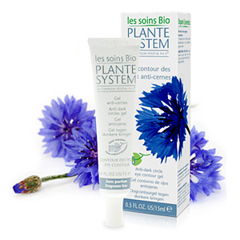

Kremai
 Skambinti +37060442544 Loading... lt en lt Prisijungti lt en lt 0Prekių nėra
0,00 € Pristatymas 0,00 € VisoPirkti
Prekė sėkmingai pridėta į krepšelį
Kiekis Viso Prekės viso (su PVM) Viso pristatymas (su PVM) 0,00 € Viso (su PVM) Pereiti prie apmokėjimo Tęsti apsipirkimą Produkcija Pagal produkto tipą Kremai Prausikliai Maskavimas Kaukės Serumai Kūno kremai Kiti Rinkiniai Mėginukai Dovanų pakavimas Pagal odos problemą Acne Veido raudonis/jautri oda Pigmentinės dėmės Riebi oda Sausa/dehidratuota oda Brandi oda Normali oda Profesionalams Linijos Produktai Seminarai ODA EKSPERTAI Oda klinikos Oda akademija Naujienos Blogas Apie mus Prekinis ženklas Rezultatai Kontaktai + Oda Kosmetika Kremai Prausikliai Maskavimas Kaukės Serumai Kūno kremai Kiti Rinkiniai Mėginukai Dovanų pakavimas + Pagal odos problemą Acne Veido raudonis/jautri oda Pigmentinės dėmės Riebi oda Sausa/dehidratuota oda Brandi oda Normali oda PROFESIONALAMS ODA KLINIKOS ODA AKADEMIJA NAUJIENOS STRAIPSNIAI APIE MUS REZULTATAI KONTAKTAIKremai
Kremas – dviejų nesimaišančių skysčių (aliejaus ir vandens) sistema. Tam, kad ši sistema būtų stabili ir laikui bėgant neišsisluoksniuotų, naudojamos tam tikros medžiagos, vadinamos emulsikliais. Emulsikliai taip pat gali padėti kreme esančioms medžiagoms geriau prasiskverbti į epidermį. ODA kremų gamyboje naudojami tik natūralūs aliejai, aukštos kokybės ekstraktai, vitaminai bei kitos veikliosios medžiagos. Kremai atlieka odos drėkinimo, maitinimo, apsauginę funkciją, padeda spręsti veido odos problemas.
Naujiena! 33,00 €ODA INTENSYVAUS VEIKIMO REGENERUOJAMASIS PAAKIŲ KREMAS 15 ml
33,00 € Į krepšelį 39,00 €
ODA INTENSYVAUS VEIKIMO REGENERUOJAMASIS KREMAS normaliai /riebiai odai 50 ml
Atsiliepimai (10)39,00 € Į krepšelį 45,00 €
ODA GLOTNINANTIS KREMAS su šilko proteinais 50 ml
Atsiliepimai (1)45,00 € Į krepšelį 39,00 €
ODA STANGRINAMASIS KREMAS su pieno rūgštimi 50 ml
Atsiliepimai (8)39,00 € Į krepšelį 22,00 €
ODA ATKURIAMASIS KREMAS sausai /jautriai odai 50 ml
Atsiliepimai (3)22,00 € Į krepšelį 41,00 €
ODA JAUNINANTIS KREMAS su retinoliu ir peptidais 50 ml
Atsiliepimai (2)41,00 € Į krepšelį 29,00 €
INTENSYVAUS POVEIKIO KREMAS VYRAMS 50 ml
29,00 € Į krepšelį 34,00 €
ODA VEIDO KREMAS NUO SAULĖS SPF30 50 ml
Atsiliepimai (4)34,00 € Į krepšelį 39,00 €
ODA DRĖKINAMASIS KREMAS su alavijais ir hialuronu 50 ml
Atsiliepimai (9)39,00 € Į krepšelį 22,00 €
ODA ATKURIAMASIS KREMAS normaliai/riebiai odai 50 ml
Atsiliepimai (3)22,00 € Į krepšelį 24,00 €
ODA REGENERUOJAMASIS KREMAS nuo spuogų 50 ml
Atsiliepimai (5)24,00 € Į krepšelį 39,00 €
ODA INTENSYVAUS VEIKIMO REGENERUOJAMASIS KREMAS sausai /jautriai odai 50 ml
Atsiliepimai (3)39,00 € Į krepšelį 16,00 €
ODA KREMAS SU ICHTIOLU (naudojamas ant spuogų lokaliai) 30 ml
Atsiliepimai (2)16,00 € Į krepšelį 29,00 €
ODA PAAKIŲ KREMAS su tetrapeptidais 15 ml
29,00 € Į krepšelį 38,00 €
ODA KREMAS RIEBIAI ODAI su retinoliu ir juodojo kmyno aliejumi 50 ml
38,00 € Į krepšelį
Naujienos
Stimuliuojanti / skaistinanti procedūra su gintaro...
Stimuliuojanti / skaistinanti procedūra su gintaro rūgštimi - ODA Akademijos kosmetologės susirinko Kaune, ODA... Skaityti plačiauJAU DIRBA ODA KLINIKOS VILNIUJE IR KAUNE!
ODA Klinikos Vilniuje ir Kaune jau teikia visas profesionalias kosmetologo paslaugas! Taip pat klinikose galite... Skaityti plačiauSkelbiame konkursą - ODA: PRIEŠ IR PO 2020
Sveikiname nugalėtojas! Skaityti plačiauReaguojame į rinkos poreikius: gaminamas ODA...
Skubiai reaguojant į dezinfekuojančių gaminių, skirtų plačiajai visuomenei, trūkumą rinkoje pasaulinės koronaviruso... Skaityti plačiauŠiuo laikotarpiu būtina ypatinga rankų priežiūra
Žiemos sezonu nuo šalčio išsausėjusias, drėgmės stokojančias rankas bei nagų odeles dar labiau alina pasaulinės... Skaityti plačiauSaugokime save ir aplinkinius: karantino metu...
Lietuvoje paskelbus karantiną bei remiantis 2020 m. kovo 14 d. LR Vyriausybės nutarimu dėl prekybos vietų ir paslaugų... Skaityti plačiauODA serumai – koncentruotos veikliosios medžiagos...
Maksimalios veikliųjų medžiagų koncentracijos ODA serumai – efektyvios priemonės spręsti įvairias odos problemas. Dėl... Skaityti plačiauKaip prižiūrėti jautrią, raustančią odą?
ODA kosmetika bei profesionalios procedūros yra efektyvios prevencinės priemonės užkirsti kelią rimtesnėms odos... Skaityti plačiauPrenumeruokite mūsų naujienlaiškį
Klientų aptarnavimas
Mano užsakymai Apmokėjimas ir pristatymas Elektroninio vartotojų ginčų sprendimo platforma Privatumo politikaODA Mokymai
Rūgštys Produktai SeminaraiKontaktai
UAB "ODA LT"
Tel: +37060442544
Email: info@odapro.eu
Susisiekite dabar © 2015-2020 UAB ODA LT Visos teisės saugomos Telefono numeris: +37060442544 Elektroninis paštas: info@odapro.eu